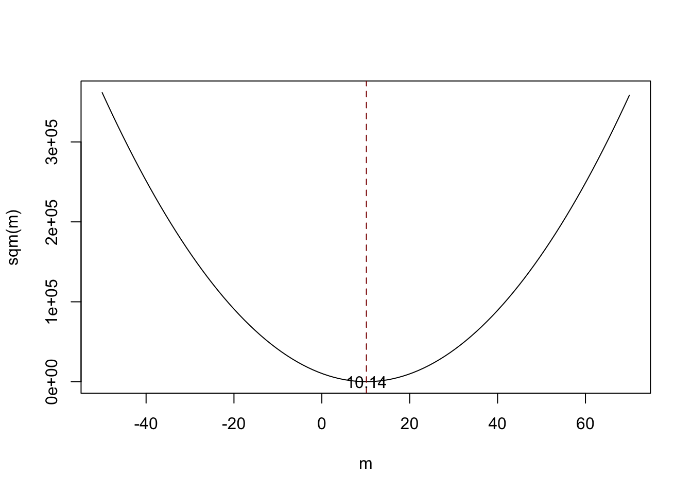

2.2 Properties of the Sample Mean
A more precise way to express consistency of an estimator \(\hat\mu\) for a parameter \(\mu\) is
\[ P(|\hat{\mu} - \mu|<\epsilon) \xrightarrow[n \rightarrow \infty]{p} 1 \quad \text{for any}\quad\epsilon>0.\]
This expression says that the probability of observing a deviation from the true value \(\mu\) that is smaller than some arbitrary \(\epsilon > 0\) converges to \(1\) as \(n\) grows. Consistency does not require unbiasedness.To examine properties of the sample mean as an estimator for the corresponding population mean, consider the following R example.
We generate a population, denoted as pop, consisting of observations \(Y_i\), where \(i=1,\dots,10000\). These observations are generated from a normal distribution with mean \(\mu = 10\) and variance \(\sigma^2 = 1\).
To investigate the behavior of the estimator \(\hat{\mu} = \bar{Y}\) we can draw random samples from this population and calculate \(\bar{Y}\) for each of them. This is easily done by making use of the function replicate(). The argument expr is evaluated n times. In this case we draw samples of sizes \(n=5\) and \(n=25\), compute the sample means and repeat this exactly \(N=25000\) times.
For comparison purposes we store results for the estimator \(Y_1\), the first observation in a sample for a sample of size \(5\), separately.
# generate a fictious population
pop <- rnorm(10000, 10, 1)
# sample from the population and estimate the mean
est1 <- replicate(expr = mean(sample(x = pop, size = 5)), n = 25000)
est2 <- replicate(expr = mean(sample(x = pop, size = 25)), n = 25000)
fo <- replicate(expr = sample(x = pop, size = 5)[1], n = 25000)Check that est1 and est2 are vectors of length \(25000\):
# check if object type is vector
is.vector(est1)
#> [1] TRUE
is.vector(est2)
#> [1] TRUE
# check length
length(est1)
#> [1] 25000
length(est2)
#> [1] 25000The code chunk below produces a plot of the sampling distributions of the estimators \(\bar{Y}\) and \(Y_1\) on the basis of the \(25000\) samples in each case. We also plot the density function of the \(\mathcal{N}(10,1)\) distribution.
# plot density estimate Y_1
plot(density(fo),
col = "green",
lwd = 2,
ylim = c(0, 2),
xlab = "Estimates",
main = "Sampling Distributions of Unbiased Estimators")
# add density estimate for the distribution of the sample mean with n=5 to the plot
lines(density(est1),
col = "steelblue",
lwd = 2,
bty = "l")
# add density estimate for the distribution of the sample mean with n=25 to the plot
lines(density(est2),
col = "red2",
lwd = 2)
# add a vertical line at the true parameter
abline(v = 10, lty = 2)
# add N(10,1) density to the plot
curve(dnorm(x, mean = 10),
lwd = 2,
lty = 2,
add = T)
# add a legend
legend("topleft",
legend = c("N(10,1)",
expression(Y[n == 1]),
expression(bar(Y)[n == 5]),
expression(bar(Y)[n == 25])
),
lty = c(2, 1, 1, 1),
col = c("black","green", "steelblue", "red2"),
lwd = 2)
First, all sampling distributions (represented by the solid lines) are centered around \(\mu = 10\). This is evidence for the unbiasedness of \(Y_1\), \(\overline{Y}_{5}\) and \(\overline{Y}_{25}\). Of course, the theoretical density \(\mathcal{N}(10,1)\) is centered at \(10\), too.
Next, have a look at the spread of the sampling distributions. Several things are noteworthy:
The sampling distribution of \(Y_1\) (green curve) tracks the density of the \(\mathcal{N}(10,1)\) distribution (black dashed line) pretty closely. In fact, the sampling distribution of \(Y_1\) is the \(\mathcal{N}(10,1)\) distribution. This is less surprising if you keep in mind that the \(Y_1\) estimator does nothing but reporting an observation that is randomly selected from a population with \(\mathcal{N}(10,1)\) distribution. Hence, \(Y_1 \sim \mathcal{N}(10,1)\). Note that this result does not depend on the sample size \(n\): the sampling distribution of \(Y_1\) is always the population distribution, no matter how large the sample is. \(Y_1\) is a good a estimate of \(\mu_Y\), but we can do better.
Both sampling distributions of \(\overline{Y}\) show less dispersion than the sampling distribution of \(Y_1\). This means that \(\overline{Y}\) has a lower variance than \(Y_1\). In view of Key Concepts 3.2 and 3.3, we find that \(\overline{Y}\) is a more efficient estimator than \(Y_1\). In fact, this holds for all \(n>1\).
\(\overline{Y}\) shows a behavior illustrating consistency (see Key Concept 3.2). The blue and the red densities are much more concentrated around \(\mu=10\) than the green one. As the number of observations is increased from \(1\) to \(5\), the sampling distribution tightens around the true parameter. Increasing the sample size to \(25\), this effect becomes more apparent. This implies that the probability of obtaining estimates that are close to the true value increases with \(n\). This is also reflected by the estimated values of the density function close to 10: the larger the sample size, the larger the value of the density.
We encourage you to go ahead and modify the code. Try out different values for the sample size and see how the sampling distribution of \(\overline{Y}\) changes!
\(\overline{Y}\) is the Least Squares Estimator of \(\mu_Y\)
Assume you have some observations \(Y_1,\dots,Y_n\) on \(Y \sim \mathcal{N}(10,1)\) (which is unknown) and would like to find an estimator \(m\) that predicts the observations as well as possible. Here, we aim to find an estimator \(m\) that results in a small total squared deviation between the predicted and observed values. Mathematically, this means we want to find an \(m\) that minimizes
\[\begin{equation} \sum_{i=1}^n (Y_i - m)^2. \tag{2.1} \end{equation}\]
Think of \(Y_i - m\) as the mistake made when predicting \(Y_i\) by \(m\). We could also minimize the sum of absolute deviations from \(m\) but minimizing the sum of squared deviations is mathematically more convenient (and will lead to a different result). That is why the estimator we are looking for is called the least squares estimator. \(m = \overline{Y}\), the sample mean, is this estimator.
We can show this by generating a random sample and plotting (2.1) as a function of \(m\).
# define the function and vectorize it
sqm <- function(m) {
sum((y-m)^2)
}
sqm <- Vectorize(sqm)
# draw random sample and compute the mean
y <- rnorm(100, 10, 1)
mean(y)
#> [1] 10.1364# plot the objective function
curve(sqm(x),
from = -50,
to = 70,
xlab = "m",
ylab = "sqm(m)")
# add vertical line at mean(y)
abline(v = mean(y),
lty = 2,
col = "darkred")
# add annotation at mean(y)
text(x = mean(y),
y = 0,
labels = paste(round(mean(y), 2)))
Notice that (2.1) is a quadratic function so that there is only one minimum. The plot shows that this minimum lies exactly at the sample mean of the sample data.
Some R functions can only interact with functions that take a vector as an input and evaluate the function body on every entry of the vector, for example curve(). We call such functions vectorized functions and it is often a good idea to write vectorized functions yourself, although this is cumbersome in some cases. Having a vectorized function in R is never a drawback since these functions work on both single values and vectors.
Let us look at the function sqm(), which is non-vectorized:
sqm <- function(m) {
sum((y-m)^2) #body of the function
}
Providing, e.g., c(1,2,3) as the argument m would cause an error since then the operation y-m is invalid: the vectors y and m are of incompatible dimensions. This is why we cannot use sqm() in conjunction with curve().
Here Vectorize() comes into play. It generates a vectorized version of a non-vectorized function.Why Random Sampling is Important
So far, we assumed (sometimes implicitly) that the observed data \(Y_1, \dots, Y_n\) are the result of a sampling process that satisfies the assumption of simple random sampling. This assumption often is fulfilled when estimating a population mean using \(\overline{Y}\). If this is not the case, estimates may be biased.
Let us fall back to pop, the fictitious population of \(10000\) observations and compute the population mean \(\mu_{\texttt{pop}}\):
# compute the population mean of pop
mean(pop)
#> [1] 9.992604Next we sample \(25\) observations from pop with sample() and estimate \(\mu_{\texttt{pop}}\) using \(\overline{Y}\) repeatedly. However, now we use a sampling scheme that deviates from simple random sampling: instead of ensuring that each member of the population has the same chance to end up in a sample, we assign a higher probability of being sampled to the \(2500\) smallest observations of the population by setting the argument prob to a suitable vector of probability weights:
# simulate outcomes for the sample mean when the i.i.d. assumption fails
est3 <- replicate(n = 25000,
expr = mean(sample(x = sort(pop),
size = 25,
prob = c(rep(4, 2500), rep(1, 7500)))))
# compute the sample mean of the outcomes
mean(est3)
#> [1] 9.443067Next we plot the sampling distribution of \(\overline{Y}\) for this non-i.i.d. case and compare it to the sampling distribution when the i.i.d. assumption holds.
# sampling distribution of sample mean, i.i.d. holds, n=25
plot(density(est2),
col = "steelblue",
lwd = 2,
xlim = c(8, 11),
xlab = "Estimates",
main = "When the i.i.d. Assumption Fails")
# sampling distribution of sample mean, i.i.d. fails, n=25
lines(density(est3),
col = "red2",
lwd = 2)
# add a legend
legend("topleft",
legend = c(expression(bar(Y)[n == 25]~", i.i.d. fails"),
expression(bar(Y)[n == 25]~", i.i.d. holds")
),
lty = c(1, 1),
col = c("red2", "steelblue"),
lwd = 2)
Here, the failure of the i.i.d. assumption implies that, on average, we underestimate \(\mu_Y\) using \(\overline{Y}\): the corresponding distribution of \(\overline{Y}\) is shifted to the left. In other words, \(\overline{Y}\) is a biased estimator for \(\mu_Y\) if the i.i.d. assumption does not hold.